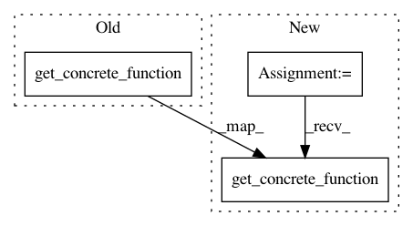

67c18a2abeac29feada5f5d7e4288bc113ae4c83,tf_agents/policies/policy_saver.py,PolicySaver,__init__,#PolicySaver#Any#Any#Any#,86
Before Change
add_batch_dim, policy.policy_state_spec)
// We call get_concrete_function() for its side effect.
action_fn.get_concrete_function(
time_step=batched_time_step_spec,
policy_state=batched_policy_state_spec)
signatures = {
"action": _function_with_flat_signature(
action_fn,
After Change
def polymorphic_action_fn(
time_step, policy_state=batched_policy_state_spec):
return action_fn(time_step, policy_state)
polymorphic_action_fn.get_concrete_function(
time_step=batched_time_step_spec,
policy_state=batched_policy_state_spec)
polymorphic_action_fn.get_concrete_function(
time_step=batched_time_step_spec)
signatures = {
In pattern: SUPERPATTERN
Frequency: 3
Non-data size: 3
Instances
Project Name: tensorflow/agents
Commit Name: 67c18a2abeac29feada5f5d7e4288bc113ae4c83
Time: 2019-03-27
Author: ebrevdo@google.com
File Name: tf_agents/policies/policy_saver.py
Class Name: PolicySaver
Method Name: __init__
Project Name: keras-team/keras
Commit Name: 6c1e3b267ae8953f919fceff407e352bd2e2e453
Time: 2021-03-11
Author: scottzhu@google.com
File Name: keras/saving/saved_model/save_impl.py
Class Name:
Method Name: wrap_layer_functions
Project Name: tensorflow/agents
Commit Name: 26e80253661ee6b455ebc4031238aeb847a181cf
Time: 2020-05-14
Author: ebrevdo@google.com
File Name: tf_agents/policies/policy_saver.py
Class Name: PolicySaver
Method Name: __init__